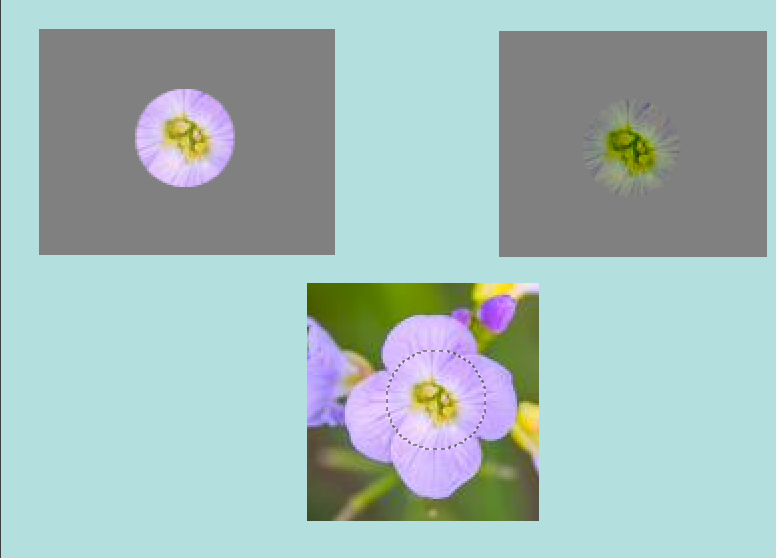

This tool was once described as “The healing brush looks like a smart clone tool on steroids”. And indeed the Healing Tool is a close relative to the Clone Tool, but it is more smart to remove small failures in images. A typical usage is the removal of wrinkles in photographs. To do so, pixels are not simply copied from source to destination, but the area around the destination is taken into account before cloning is applied. The algorithm used for this, is described in a scientific paper by Todor Georgiev [GEORGIEV01].
To use it, first choose a brush with a size adapted to the defect. Then Ctrl-click on the area you want to reproduce. Release the Ctrl key and drag the sample to the defect. Click. If the defect is slight, not very different from its surrounding, it will be corrected as soon. Else, you can correct it with repeated clicks, but with a risk of daubing.
There are different possibilities to activate the tool:
-
From the main menu: → → .
-
By clicking the tool icon in the Toolbox.
-
By pressing the H keyboard shortcut.
- Ctrl
-
The Ctrl key is used to select the source. You can heal from any layer of any image, by clicking on the image display, with the Ctrl key held down, while the layer is active (as shown in the Layers dialog). If Alignment is set to “Non-aligned” or “Aligned” in Tool Options, then the point you click on becomes the origin for healing: the image data at that point will be used when you first begin painting with the Heal tool. In source-selection mode, the cursor changes to a crosshair-symbol.
- Shift
-
Once the source is set, if you press this key, you will see a thin line connecting the previously clicked point with the current pointer location. If you click again, while going on holding the Shift key down, the tool will “heal” along this line.

Normally, tool options are displayed in a window attached under the Toolbox as soon as you activate a tool. If they are not, you can access them from the main menu through → → which opens the option window of the selected tool. The available tool options can also be accessed by double clicking the corresponding tool icon in the Toolbox.
- Mode, Opacity, Brush, Size, Aspect Ratio, Angle, Spacing, Hardness, Force, Dynamics, Dynamics Options, Apply Jitter, Smooth Stroke, Lock brush to view, Expand Layers
- See the Common Paint Tool Options for a description of tool options that apply to many or all paint tools.
- Hard edge
-
This option gives a hard contour to the healed area.
- Sample merged
-
If you enable this option, sampling is not calculated only from the values of the active layer, but from all visible layers.
For more information, see the Glossary entry.
- Alignment
-
This option is described in Clone tool.
Although the Heal tool has common features with the Clone tool on using, the result is quite different.
Figure 14.78. Comparing “Clone” and “Heal”

Cloning on the left. All colors are transferred.
Healing on the right. Colors are much less transferred, especially on borders where surrounding pixels of destination are taken in account.